From Aspen and Beyond
The Golden Hour
Upcoming
September 26 – October 2, 2026
outdoors
Snowmass Balloon Festival — Morning Launch
Thirty-plus balloons lift off over the Elk Mountains at sunrise for the festival's 51st year. Mornings are cold at this altitude — layers, closed-toe shoes, and a blanket or chairs; dogs aren't allowed on the field.
For: The single most photogenic morning of the week; worth the early alarm.
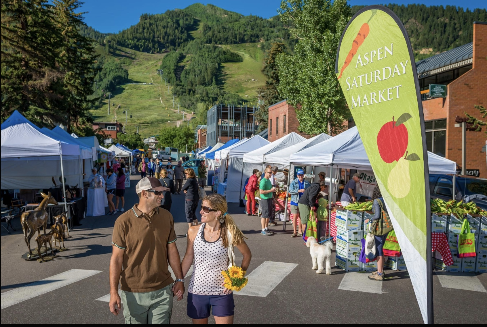
family
Aspen Saturday Market
The town's weekly market runs 9 to 2 with Colorado-grown produce, local meats, and artisan goods — strictly Colorado-made, no brokers. Arrive before 10 for the easiest browsing and the shortest coffee line.
For: A gentle first morning — daylight, low-barrier, and an easy taste of the town.
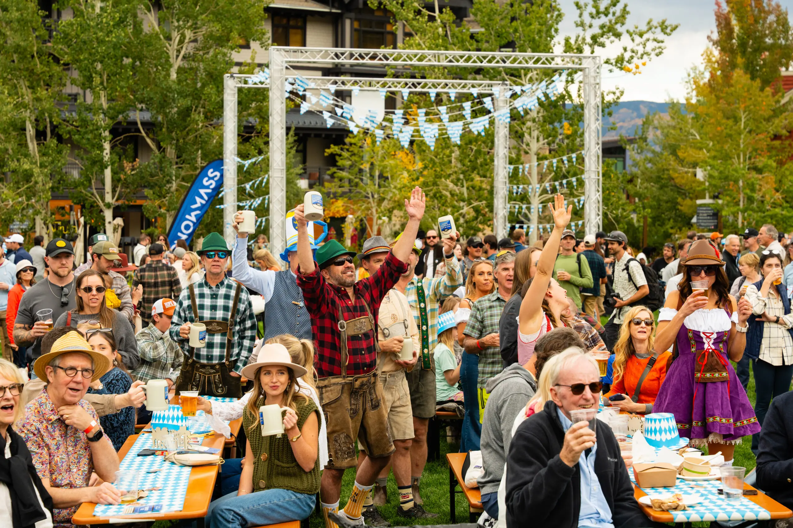
dining
Snowmass Oktoberfest
Snowmass caps its summer season with steins, pretzels, a sausage-eating contest, stein-holding, live music, and the return of Manuela, the Oktoberfest Queen. Lederhosen encouraged; the festival itself is open to all ages.
For: An easy, festive afternoon after the morning balloons — no tickets needed.
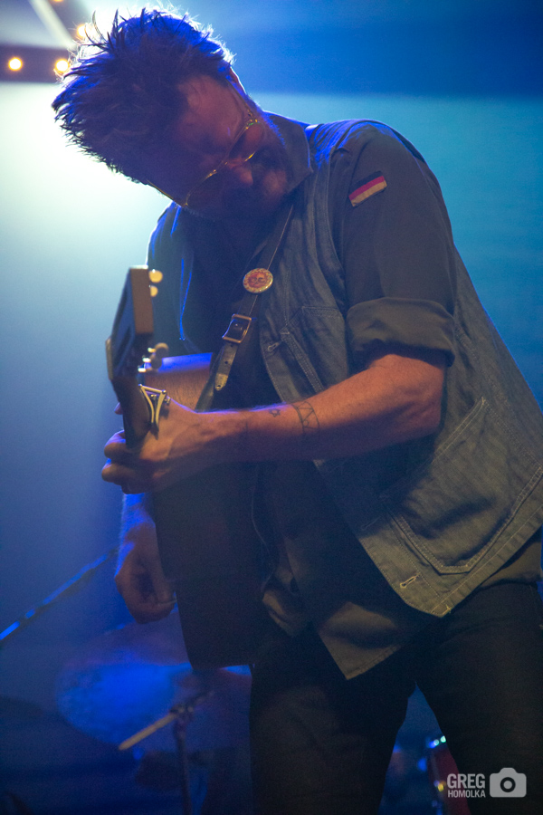
music
Hiss Golden Messenger at Belly Up
M.C. Taylor brings his literate, gospel-tinged Americana to Aspen's intimate 450-cap room, with Lou Hazel opening on the I'm People Tour. Doors 7 PM, show 8 PM. All ages (under 18 with a parent or guardian).
For: For the music-first guest — one of the fall's finest songwriters in the valley's best listening room.
outdoors
Snowmass Balloon Festival — Final Launch
The last morning of the festival's 51st year — the final mass ascension over Snowmass Town Park. Same drill: layers, blankets, arrive early; balloons go up weather permitting.
For: Your second chance if Saturday's weather didn't cooperate.
arts
Aspen Literary Festival — Closing Day
The festival's second year closes with a full day of author conversations, panels, and signings across downtown — Jennette McCurdy, Richard Russo, Veronica Roth, and more on the lineup. Most events are free with registration; marquee Wheeler main-stage sessions are ticketed.
For: For readers — the cultural high point of the weekend, and mostly free.

dining
Aspen Restaurant Week Autumn — Final Evening
The last evening of the autumn edition — prix fixe, multi-course fall-harvest menus at 25+ local restaurants, from Matsuhisa to Wild Fig. Reserve ahead; menus and the full restaurant list are at the Chamber.
For: The week's best-value fine dining — book the table tonight, it ends Sunday.
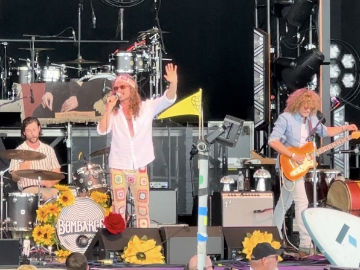
music
Bombargo at Belly Up
Saskatoon-bred Bombargo bring their big-chorus pop-rock to the Belly Up room, with Graham Good & The Painters opening. Doors 7 PM, show 8 PM. All ages (under 18 with a parent or guardian).
For: A high-energy night out for the group that wants to dance.
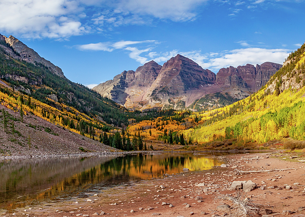
outdoors
Maroon Bells at Peak Color
Late September is the peak window for the gold — the most photographed peaks in North America at their most golden. Between 8am and 5pm all visitors must use the shuttle from Aspen Highlands; reserve ahead, it sells out in color season.
For: The can't-miss of the week for anyone who hasn't seen the Bells in fall.
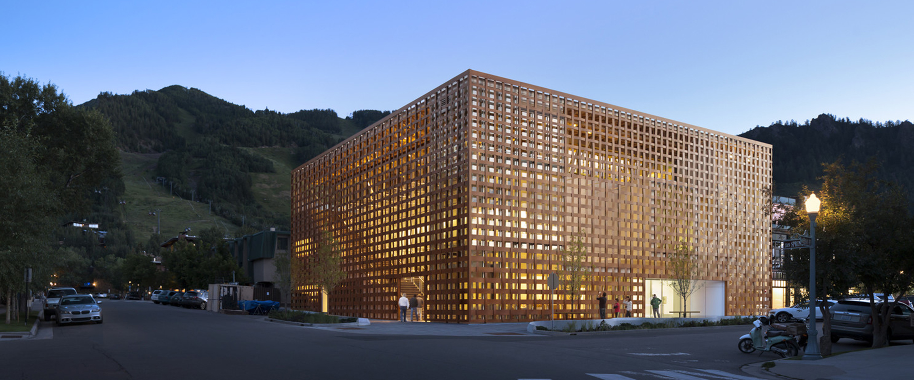
arts
Aspen Art Museum — Fall Exhibitions
Free, always. This fall: Adrián Villar Rojas's monumental 'First Gods, Lost Animals,' Arch Connelly's 'Straighten Your Wig and Pray' (through Oct 11), and Anthea Hamilton's 'Cauliflower Sundial' — plus the rooftop for the view.
For: A quiet, contemplative morning — and the rooftop view is worth the trip alone.
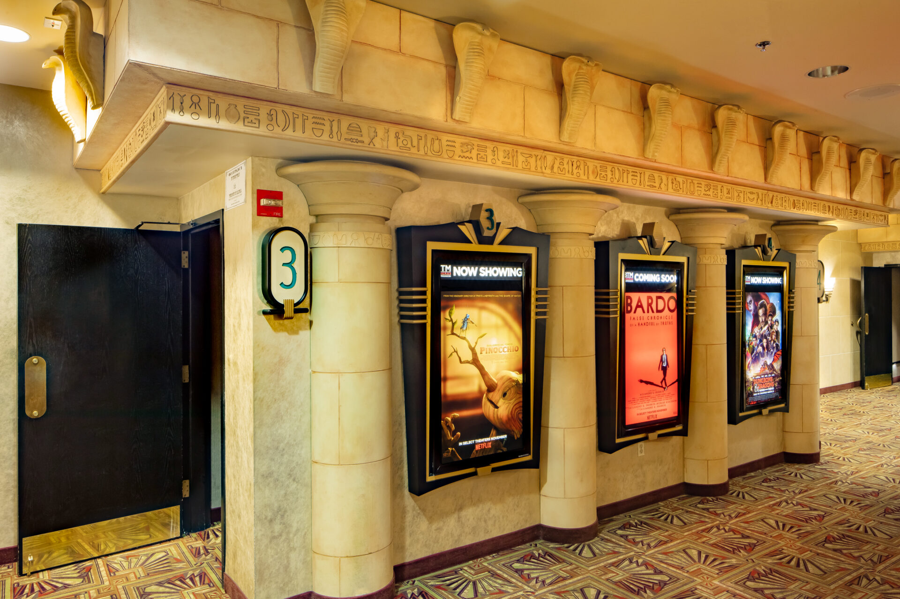
arts
Aspen Filmfest — Opening Day (47th)
Six days of international and independent film — features and docs from Cannes, Sundance, Telluride, and Venice — opens at the Isis. Tickets on sale now; the full program is at aspenfilm.org.
For: The week's best indoor evening — festival energy without the ski-season crowds.
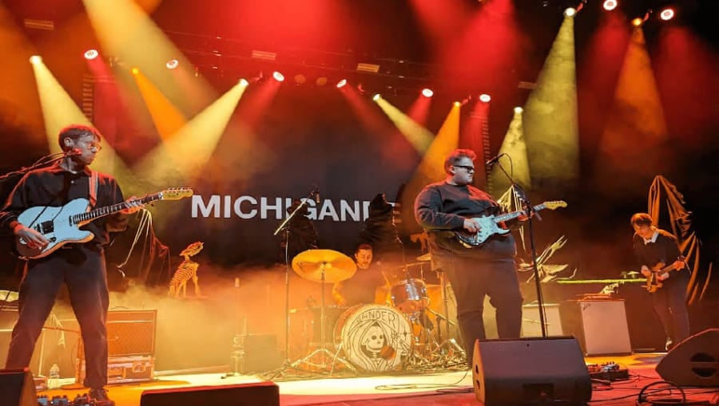
music
Michigander at Belly Up
Jason Singer's Michigander brings earnest, heartland indie-rock to the Belly Up stage, with Jake Lemond opening. Doors 7 PM, show 8 PM. All ages (under 18 with a parent or guardian).
For: For the indie-rock fan — intimate room, big choruses.
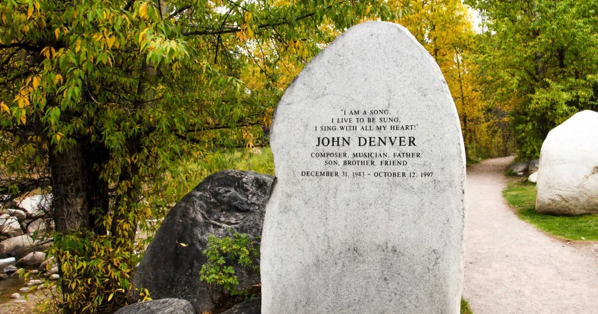
music
John Denver Celebration — Opening Day
The annual tribute week opens — concerts of Denver's songbook at the Wheeler and the Snowmass Chapel, plus nightly sing-alongs of 'Rocky Mountain High' and 'Country Roads.' Each event is run by its own organizer; the full schedule is on the celebration site.
For: Peak fall color meets the valley's most heartfelt tradition — made for the sing-along crowd.
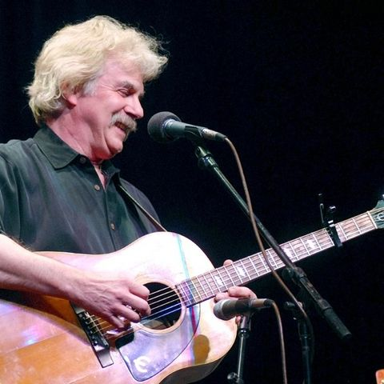
music
An Evening with Tom Rush accompanied by Brendan Cleary
A foundational figure of the '60s folk revival, with his distinctive guitar work and songs by Joni Mitchell, James Taylor, and Jackson Browne in his repertoire. An intimate acoustic evening in the 1889 opera house — the room is half the experience.
For: For the folk traditionalist — a master in the perfect room.
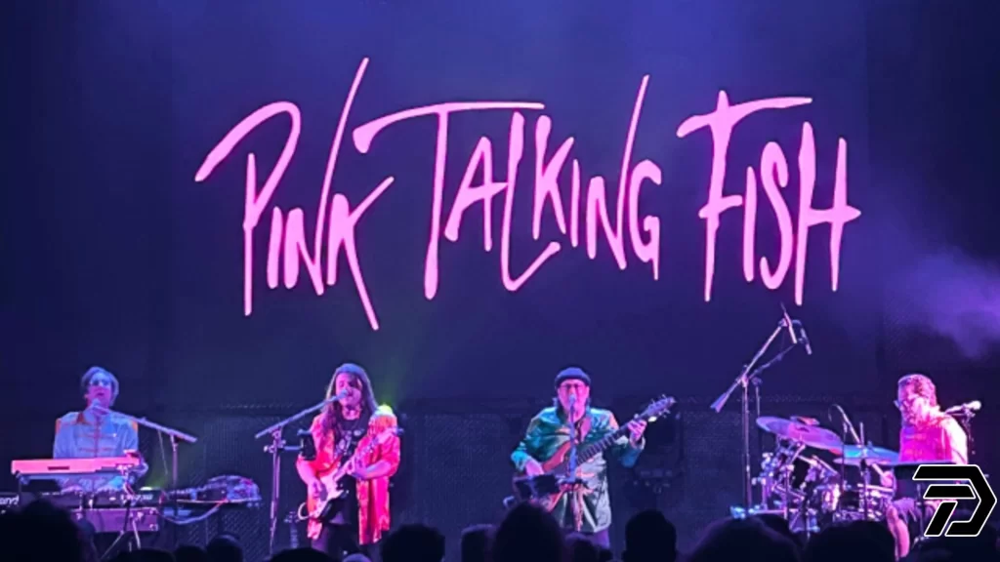
music
An Evening with Pink Talking Fish
A high-wire hybrid tribute — Pink Floyd, Talking Heads, and Phish fused into one late-night set. Doors 8 PM, show 9 PM. 21+, valid photo ID required.
For: The late-night counterprogramming to the Wheeler's folk evening.
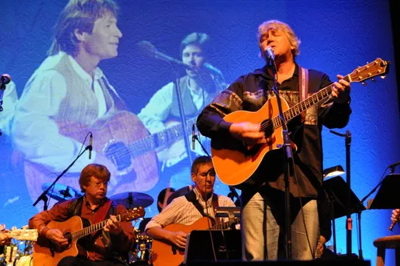
music
Mack Bailey and Chris Nole: Poems, Prayers & Promises: The Songs of John Denver
'Poems, Prayers & Promises' — an intimate concert of John Denver's songbook, part of the week's Celebration. Warmth, honesty, and the songs the whole valley knows by heart.
For: The Celebration's centerpiece concert — book ahead.
October 3 – October 9, 2026
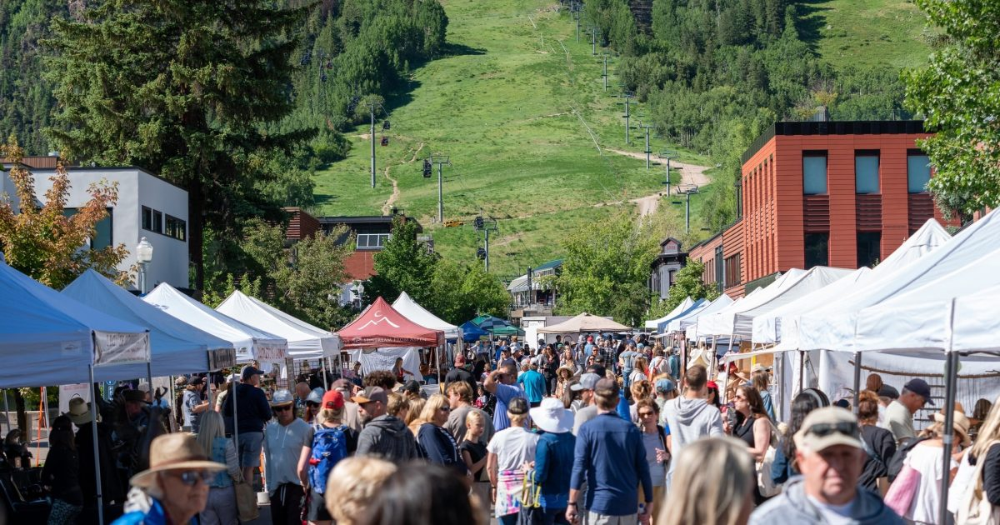
family
Aspen Saturday Market — Season Finale
The last market of the 2026 season — fall produce, apple cider, pumpkins, and the final roundup of Colorado artisans. Arrive early; the send-off crowds come out for this one.
For: Bookend the week where it started — one last stroll before checkout.
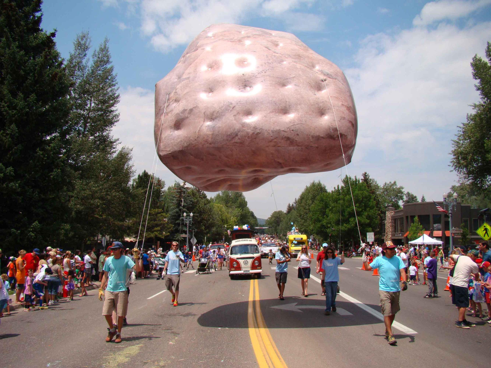
family
Carbondale Potato Day
Carbondale's harvest tradition since 1909 — parade down Main Street, community BBQ, farm market, and kids' activities in Sopris Park, 30 minutes down-valley. The pancake breakfast starts at 8 if you're early.
For: Small-town Colorado at its most charming — an easy morning drive before departure.
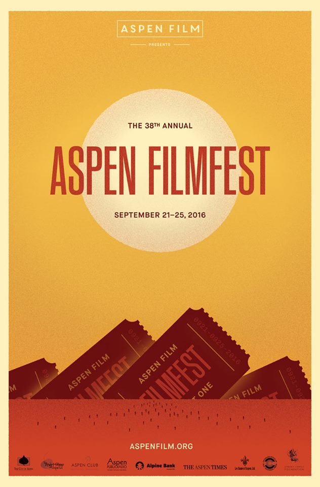
arts
Aspen Filmfest — Closing Weekend
The festival heads into its closing weekend — catch the features and docs you missed earlier in the week, before the Sunday encores in Carbondale.
For: A second bite at the week's biggest arts event.
October 17 – October 23, 2026
speakers
Changemaker Speaker Series Kiliii Yuyan: Indigenous Wisdom for a Modern World
National Geographic explorer and photographer Kiliii Yuyan brings the Wheeler's Changemaker Speaker Series a talk on indigenous wisdom for the modern world. Thoughtful, image-rich, and unlike anything else on the October calendar.
For: Culture-hungry guests who want a night with substance.
arts
Manual Cinema's The 4th Witch
Chicago's Manual Cinema stages a shadow-puppetry cinema-theater piece at the Wheeler — handmade film, live music, and overhead projectors. Single-source listing so far; confirm time with the venue before sending guests.
For: Artsy guests and adventurous families.
October 24 – October 30, 2026
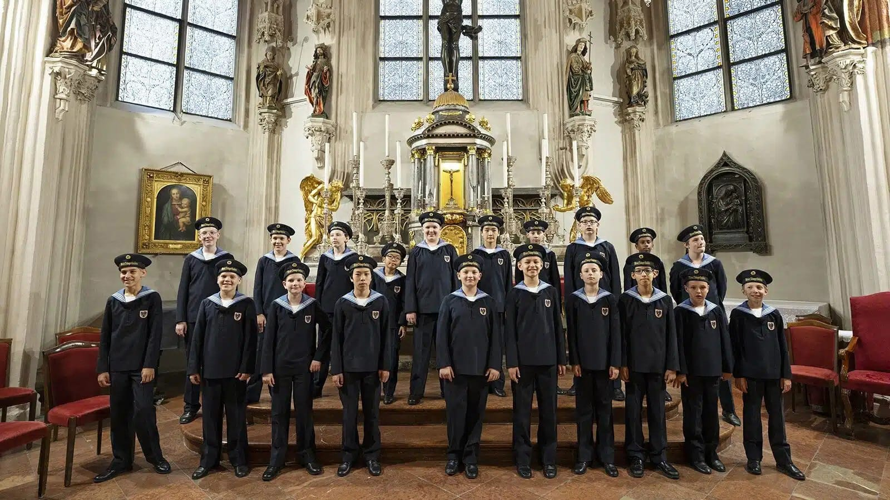
music
Vienna Boys Choir
Five centuries of choral tradition in one of the world's most famous boy choirs, in the jewel-box Wheeler. A rare Aspen appearance and a genuinely special night.
For: Music lovers; an elegant family night out.
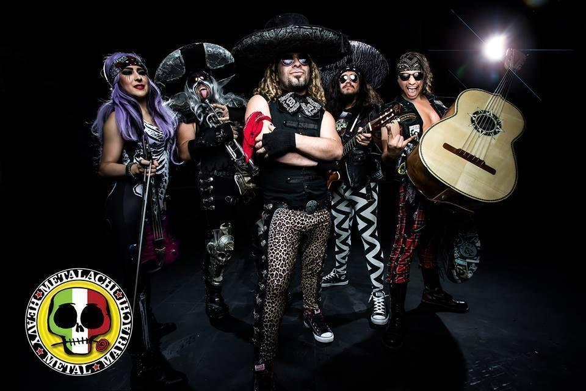
music
Metalachi
The world's first heavy-metal mariachi band: full mariachi instrumentation playing metal classics. Loud, joyful, and completely unserious — a Belly Up specialty.
For: Groups that want a fun, unpretentious night out.
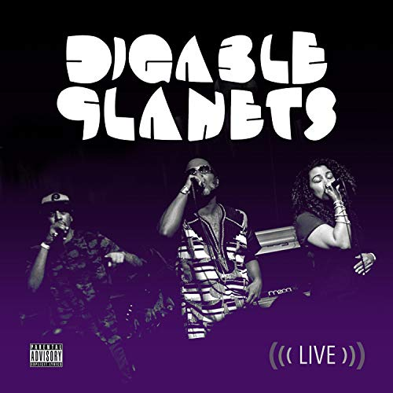
music
Digable Planets
The Grammy-winning jazz-rap trio behind 'Rebirth of Slick (Cool Like Dat)' brings their smooth, crate-digger cool to the 450-cap Belly Up room. An intimate room for a legendary act.
For: Hip-hop and jazz fans; a standout date night.
November 14 – November 20, 2026
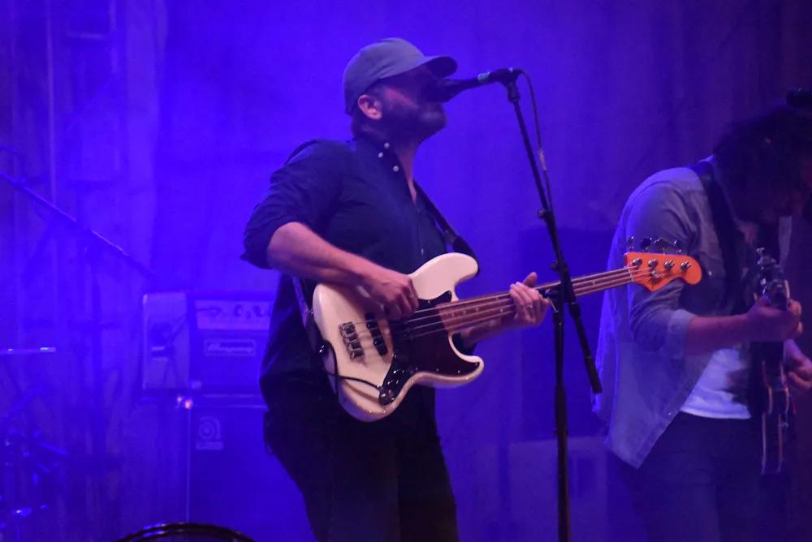
music
The Black Angels with GHOSTWOMAN
Austin's psych-rock torchbearers bring their drone-heavy, Velvet Underground-descended sound to Belly Up, with GHOSTWOMAN opening. Expect it loud.
For: Rock fans; late-night energy seekers.
music
Foy Vance World Tour with Bonnie Bishop & Ryan McMullan
Northern Irish singer-songwriter Foy Vance — a favorite of Ed Sheeran and Elton John — brings his soulful, gravel-voiced songs to the Wheeler. A songwriter's songwriter in a listening room built for exactly this.
For: Music lovers who listen closely.
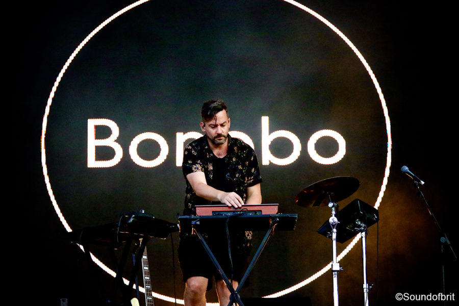
music
Bonobo
Simon Green's downtempo electronic project lands at Belly Up — lush, cinematic, and built for a dark room with a good system. A coup booking for a 450-cap room.
For: Electronic music fans; a sophisticated night out.
November 28 – December 4, 2026
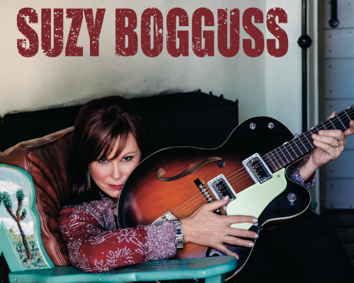
music
Suzy Bogguss: A Swingin' Little Christmas
Country veteran Suzy Bogguss swings through holiday classics with western-swing charm at the Wheeler. The Saturday after Thanksgiving — an easy, joyful family night.
For: Families in town for Thanksgiving week.
December 5 – December 11, 2026
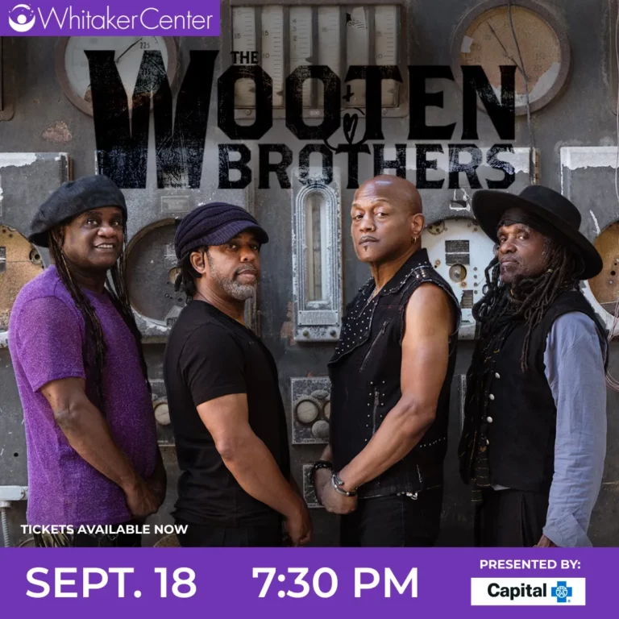
music
The Wooten Brothers
Victor Wooten — five-time Grammy winner and arguably the most influential living bassist — with his brothers. A masterclass disguised as a concert.
For: Musicians and serious music fans.
December 12 – December 18, 2026
comedy
EDDiE iFFT: The Last Chair Tour
Veteran stand-up Eddie Ifft's early show on a double-comedy Saturday at the Wheeler. Sharp, road-tested, and an easy ticket.
For: Adults wanting a laugh before dinner.
comedy
Ismo: Perseverance Tour
Finnish comedian Ismo mines the absurdity of the English language — a clean, clever hour that plays beautifully to smart crowds. Late show of the Wheeler's comedy double-header.
For: Wordplay lovers; a bright night out.
December 19 – December 25, 2026
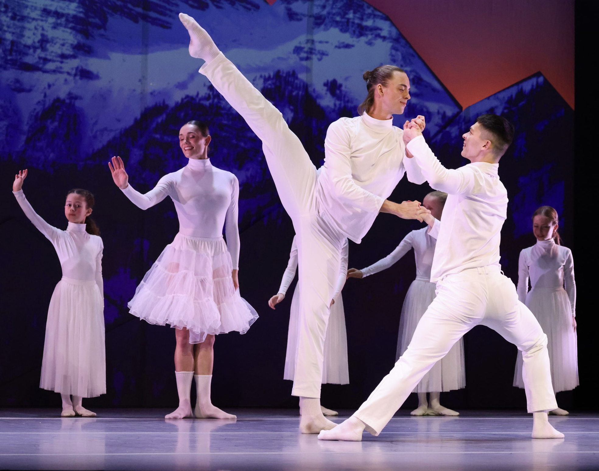
dance
DanceAspen: A Snowy Soiree
Aspen's own contemporary dance company takes the Wheeler stage for a winter soiree two days before Christmas. Local, beautiful, and brief.
For: Dance and arts patrons; holiday-week guests.
December 26 – January 1, 2027
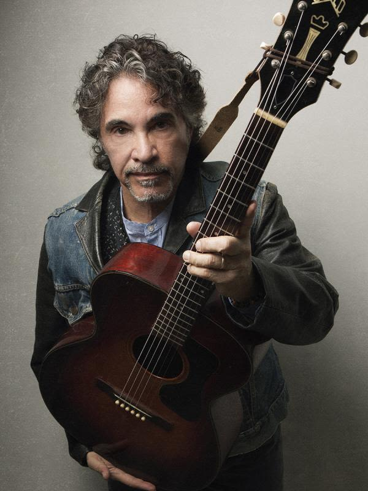
music
John Oates and the Good Road Band
Half of Hall & Oates brings his roots-and-Americana band to the Wheeler between Christmas and New Year's. Expect the hits reimagined and deep cuts.
For: Holiday-week guests; classic rock fans.
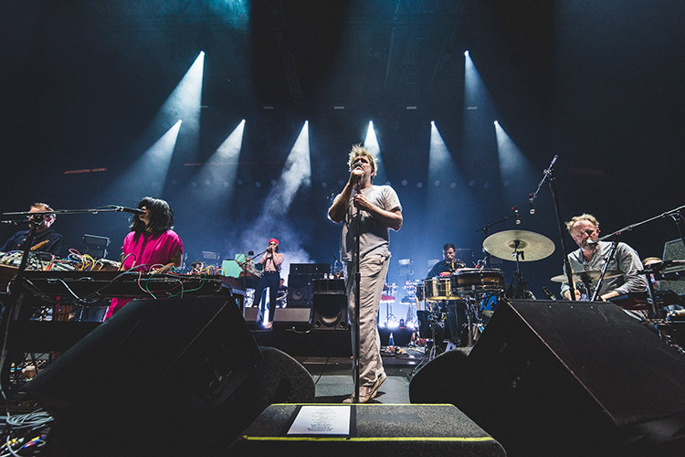
music
LCD Soundsystem — New Year's Eve 2026
James Murphy's dance-punk institution headlines Belly Up's New Year's run — three nights in a 450-cap room. These will not last.
For: The booking of the season; act fast.
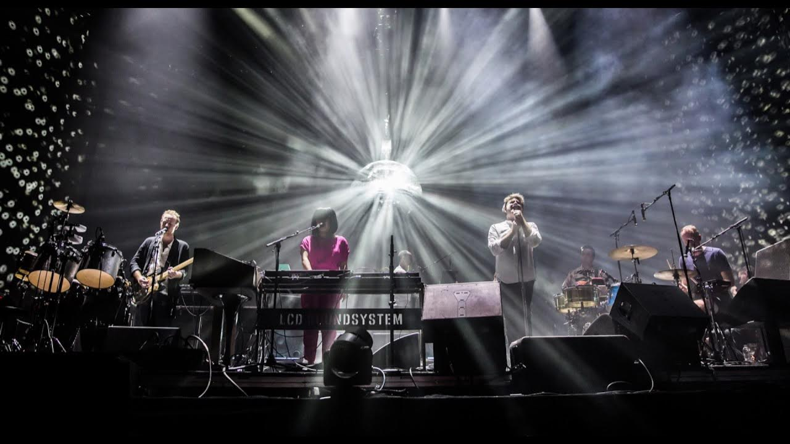
music
LCD Soundsystem — New Year's Eve 2026
Ring in 2027 with LCD Soundsystem at Belly Up — the room's biggest New Year's Eve in years. Book the moment tickets move.
For: The NYE splurge.